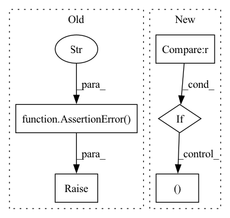

Pattern ID :39704
Before Change
]
)
raise AssertionError("Unsupported task "{self.task}" for modality `{self.modality}`" )
@property
def outputs(self) -> OrderedDict[str, OutputDescription]:
After Change
@property
def _input_descriptions(self) -> OrderedDict[str, InputDescription]:
if self.modality == "text" and self.seq2seq == "decoder" :
return OrderedDict(
[
(
"encoder_last_hidden_state",
InputDescription(
"encoder_last_hidden_state",
"Sequence of hidden states at the output of the last layer of the encoder",
)
),
(
"input_ids",
InputDescription(In pattern: SUPERPATTERN
Frequency: 3
Non-data size: 5
Instances Fragment ID: 113006796
Project Name: huggingface/exporters
Commit Name: 0ec6acabdae817c53f9228b042bfed039c4f8f69
Time: 2022-10-03
Author: mail@hollance.com
File Name: src/exporters/coreml/config.py
M Class Name: CoreMLConfig
N Class Name: CoreMLConfig
M Method Name: _input_descriptions(1)
N Method Name: _input_descriptions(1)
M Parent Class:
N Parent Class:
M File Name: src/exporters/coreml/config.py
N File Name: src/exporters/coreml/config.py
M Start Line: 156
M End Line: 253
N Start Line: 181
N End Line: 306
Before Change
// When it should not
if (not isinstance(operation, CoreOp)
and current_state.stage != previous_state.stage):
raise AssertionError("You are not allowed to change the stage" )
// Add batch size to the shape when collating
if isinstance(operation, Collate):
// We can"t have a secondAfter Change
current_state, memory_allocation = operation.declare_state_and_memory(
current_state)
if current_state.jit_mode != previous_state.jit_mode :
if current_block:
operation_blocs.append((previous_state.jit_mode, current_block ))
current_block = [op_id]
else:
current_block.append(op_id) Fragment ID: 113006799
Project Name: libffcv/ffcv
Commit Name: fe3056fb72a5f70821e9d38130f65271a5749a2f
Time: 2021-10-26
Author: leclerc@mit.edu
File Name: ffcv/pipeline/pipeline.py
M Class Name: Pipeline
N Class Name: Pipeline
M Method Name: parse_pipeline(2)
N Method Name: parse_pipeline(2)
M Parent Class:
N Parent Class:
M File Name: ffcv/pipeline/pipeline.py
N File Name: ffcv/pipeline/pipeline.py
M Start Line: 42
M End Line: 78
N Start Line: 46
N End Line: 70
Before Change
current_setting = tensor_quantizer.use_symmetric_encodings
if current_setting != quantizer_setting:
logger.error("Conflicting tensor quantizer settings for symmetric encodings")
raise AssertionError("Conflicting tensor quantizer settings for symmetric encodings" )
else:
if setting_name in [ConfigDictKeys.IS_INPUT_QUANTIZED, ConfigDictKeys.IS_OUTPUT_QUANTIZED]:
tensor_quantizer.enabled = quantizer_setting
else:After Change
tensor_quantizer.enabled = quantizer_setting
elif setting_name == ConfigDictKeys.IS_SYMMETRIC:
tensor_quantizer.use_symmetric_encodings = quantizer_setting
elif setting_name == ConfigDictKeys.ENCODING_CONSTRAINTS :
tensor_quantizer.encoding_min_max_fixed_vals = (quantizer_setting[ConfigDictKeys.MIN],
quantizer_setting[ConfigDictKeys.MAX] )
if tensor_quantizer not in modified_tensor_quantizers:
modified_tensor_quantizers[tensor_quantizer] = {setting_type}
else: Fragment ID: 113006790
Project Name: quic/aimet
Commit Name: 23f8abbb32da75a3ba3b8ea5a1a118337f831424
Time: 2023-04-10
Author: quic_klhsieh@quicinc.com
File Name: TrainingExtensions/torch/src/python/aimet_torch/quantsim_config/quantsim_config.py
M Class Name: AnonimousClass
N Class Name: AnonimousClass
M Method Name: _modify_tensor_quantizers(4)
N Method Name: _modify_tensor_quantizers(4)
M Parent Class:
N Parent Class:
M File Name: TrainingExtensions/torch/src/python/aimet_torch/quantsim_config/quantsim_config.py
N File Name: TrainingExtensions/torch/src/python/aimet_torch/quantsim_config/quantsim_config.py
M Start Line: 700
M End Line: 733
N Start Line: 703
N End Line: 743